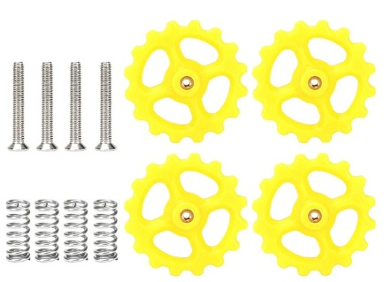
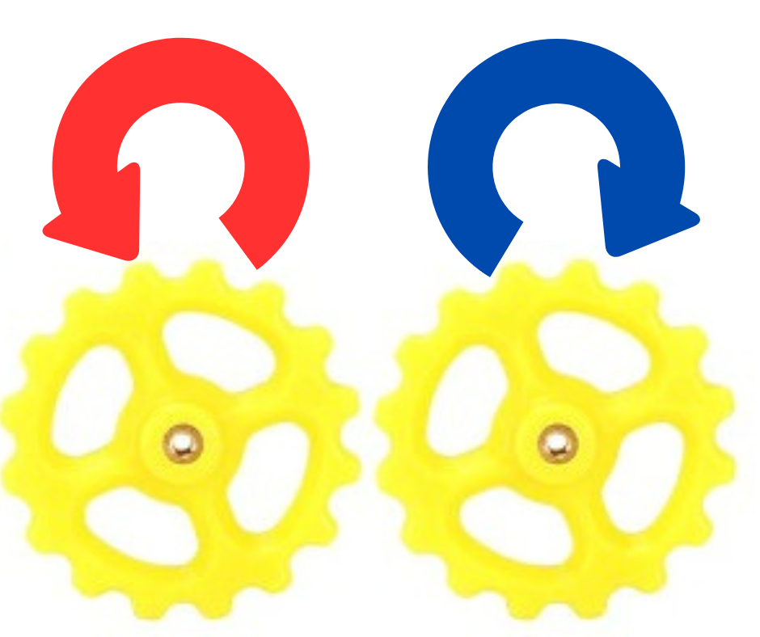
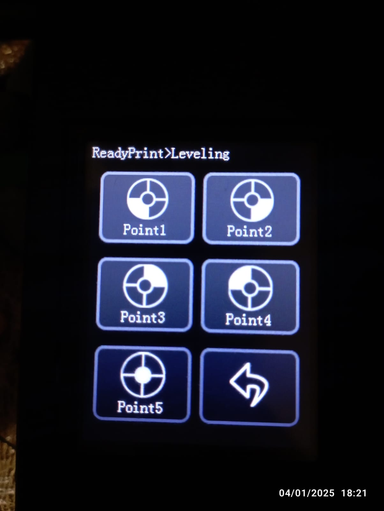

Inicialmente debemos de ubicar el kit de nivelacion de nuestra impresora, siendo ruedas color amarillo ubicadas en la parte inferior de nuestra cama caliente

Al ser una nivelacion milimetrica mediante un tornillo con cuerdas, debemos saber que tiene dos sentidos de giro, si giramos la rueda hacia la izquierda la rueda de nivelaciob ira hacia abajo en cambio, si giramos hacia la derecha la rueda de nivelacion ira hacia arriba

Entendiendo este movimiento, debemos realizar los siguientes pasos en nuestra impresora para poder nivelar de manera correcta, necesitaremos una hoja comun y corriente de cuaderno para apoyarnos. Se le conoce como nivelacion por hoja
Una vez encendida la impresora, debemos presionar el boton que dice "leveling" o "nivelacion" los cual nos abrira la siguiente serie de botones:

Observamos 5 botones denominados de la siguiente manera "Punto 1" hasta "Punto 5", cada boton hace referencia a una esquina de la cama caliente, empezando por la esquina inferior izquierda (Punto 1), pasando por la esquina inferior derecha (Punto 2), seguido de la esquina superior derecha (Punto 3)
y llegando a la esquina superior izquierda (Punto 4), de esta manera ubicamos las 4 esquinas de nivelacion de nuestra impresora, sin embargo nos hace falta el punto 5. Este hace referencia al centro de nuestra cama caliente
Para dar inicio a la calibracion, debemos colocar nuestro pedazo de hoja en la esquina inferior izquierda (Punto 1) y presionar dicho boton esto hara que el nozzle se posicione en esa esquina y ocasione que nuestro pedazo de hoja se encuentre entre el nozzle y la cama, en este punto debemos hacer un movimiento
el cual es mover de lado a lado nuestro pedazo de hoja, si el pedazo de hoja no se puede mover significa que esta mal nivelado y debemos girar la rueda de nivelacion hacia la izquierda, en caso contrario que se mueva con mucha libertad deberemos girar la rueda hacia lado derecho. Se debe realizar este movimiento hasta que
se sienta una muy ligera friccion entre la cama, nuestra hoja y el nozzle.
Se debe repetir este proceso con cada uno de los 4 puntos restantes
Una vez acabado de probar los 5 puntos, es recomendable repetir el proceso desde el punto 1. Esto debido a que por el movimiento de las ruedas de nivelacion interfieren entre si. Si el proceso se repite de 3 a 4 veces podremos estar seguros que se ha nivelado correctamente y podemos continuar con el siguiente proceso